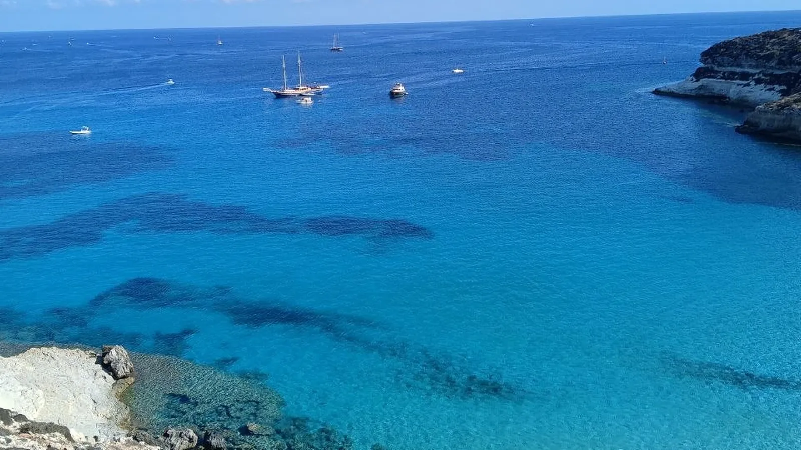
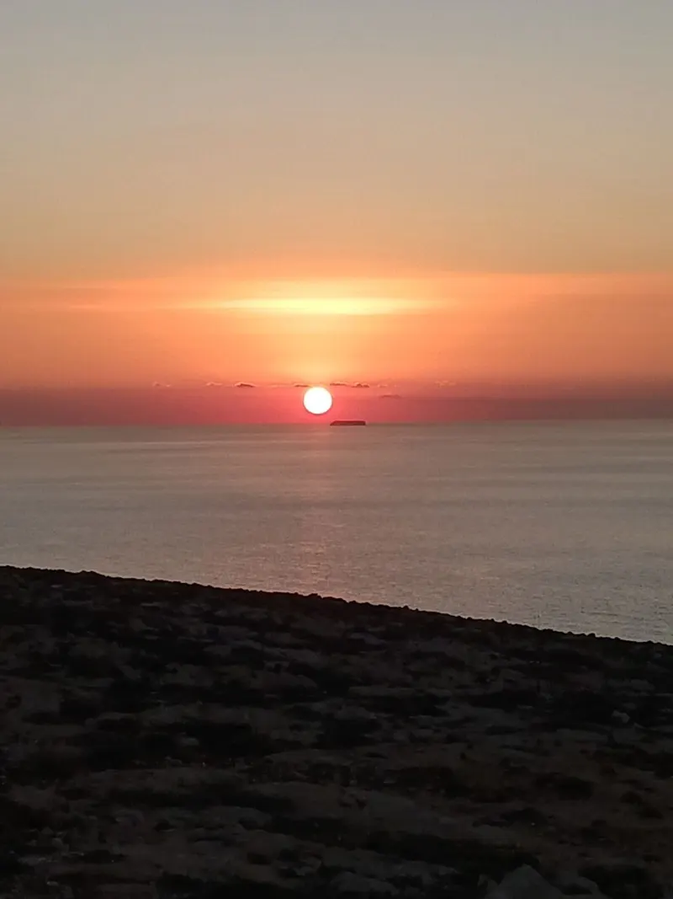

In breve
Lampedusa è la più grande delle Isole Pelagie, il punto più a sud d’Italia: è più vicina alla Tunisia che alla Sicilia. Ci si va per il mare. La famosa Spiaggia dei Conigli è gratuita, ma in estate l’accesso è a numero chiuso e va prenotato online. Si arriva in aereo da Palermo o Catania (tutto l’anno) o da Roma e Milano (in estate), oppure col traghetto notturno da Porto Empedocle. I mesi migliori sono giugno e settembre; servono almeno 3-4 giorni.
Perché Lampedusa
L’isola è piatta, arida e rocciosa, quasi senza alberi: non somiglia al resto d’Italia. Ma lungo la costa sud le scogliere calcaree scendono in un’acqua così trasparente che le barche sembrano sospese nell’aria. Il lato nord è più selvaggio, con scogliere alte e tramonti sul mare aperto. La sera la vita si sposta in Via Roma, la strada principale del paese, piena di ristoranti, gelaterie e gente a passeggio.

Spiaggia dei Conigli: come prenotare
La Spiaggia dei Conigli si trova nella Riserva Naturale Isola di Lampedusa, area protetta gestita da Legambiente. È una delle poche spiagge italiane dove le tartarughe marine Caretta caretta depongono ancora le uova, per questo le regole sono severe.
- Prenotazione: in stagione estiva l’ingresso è a numero chiuso e consentito solo con prenotazione online gratuita, a fasce orarie. Prenota appena conosci le date, soprattutto per agosto.
- La camminata: dal parcheggio sulla strada per Capo Ponente sono circa 15-20 minuti a piedi su un sentiero sterrato, poi i gradini fino alla baia. Servono scarpe comode.
- Porta tutto: in spiaggia non ci sono bar, ombra né negozi. Porta acqua, cibo e un cappello.
- Chiusa la sera: di notte la spiaggia chiude per proteggere i nidi delle tartarughe.
Le calette e spiagge più belle
- Cala Pulcino: caletta selvaggia di ciottoli bianchi sulla costa sud-ovest, anche questa nella riserva, con un sentiero ripido.
- Tabaccara: la famosa baia delle “barche sospese”, da vedere in barca o dalle scogliere sopra.
- Cala Croce e Cala Madonna: piccole, facili da raggiungere, acqua limpidissima.
- Cala Greca: bassa e riparata, ideale con i bambini.
- Guitgia: la spiaggia del paese, di sabbia e con servizi, perfetta se hai poco tempo.
Un giorno in barca
Molte calette si raggiungono meglio dal mare. Dal porto partono piccole barche per il giro dell’isola in giornata, con soste per il bagno e pranzo a bordo. È il modo più semplice per vedere Tabaccara e la costa nord. Scegli gruppi piccoli ed evita le giornate di vento forte: gli operatori ti dicono quale lato dell’isola è calmo.
Con un giorno in più, barca o aliscafo portano a Linosa, la piccola isola vulcanica vicina: rocce nere, case colorate e pochissima gente.
Come arrivare a Lampedusa
| Come | Da dove | Da sapere |
|---|---|---|
| Aereo | Palermo e Catania (tutto l’anno); Roma, Milano e altre città (soprattutto in estate) | Circa 1 ora dalla Sicilia. Prenota presto per luglio e agosto. |
| Traghetto notturno | Porto Empedocle (vicino ad Agrigento) | Circa 9 ore, con cabine. Puoi portare l’auto, ma sull’isola non serve. |
| Aliscafo | Porto Empedocle, in estate | Più veloce del traghetto, ma può essere cancellato col mare mosso. |
Per arrivare a Porto Empedocle, abbina il viaggio al nostro itinerario Sicilia in 7 giorni: Agrigento e la Valle dei Templi sono a pochi chilometri.
Quando andare
- Giugno e settembre: il compromesso migliore. Mare caldo, prezzi più bassi e meno gente alla Spiaggia dei Conigli.
- Luglio e agosto: caldo, vivace e caro. Prenota voli, alloggio e spiaggia con largo anticipo.
- Maggio e ottobre: tranquillo e spesso ancora caldo per il bagno, ma alcuni servizi e giri in barca sono meno frequenti.
- Inverno: mite ma ventoso e molto tranquillo. Va bene per camminare, non per il mare.
Come muoversi
- Scooter: la scelta classica. L’isola è piccola, le distanze brevi e si parcheggia facilmente.
- Piccola auto o buggy: più comodi con bambini o bagagli. Si noleggiano in paese, al porto o all’aeroporto.
- Autobus locale: in estate collega il paese alle spiagge principali, compresa la strada per la Spiaggia dei Conigli.
- A piedi: paese, porto e spiaggia della Guitgia sono tutti raggiungibili a piedi.
Dove dormire e cosa mangiare
Dormi in paese a Lampedusa: c’è tutto, ristoranti, noleggi e giri in barca. Gli appartamenti per vacanze sono molto diffusi e spesso costano meno degli hotel. A cena prova il pesce fresco, la pasta con tonno o ricci, i cannoli e la granita siciliani e il pane cunzato. Per prezzi e buone maniere a tavola leggi mangiare fuori in Italia.

Regole da rispettare
- Non portare via sabbia, sassi o conchiglie: è vietato e si rischia la multa.
- Nella riserva segui i sentieri segnati e le indicazioni degli operatori.
- Se vedi un nido di tartaruga recintato sulla sabbia, stai a distanza.
- Usa creme solari rispettose del mare e riporta via tutti i rifiuti.
Organizza i tuoi giorni a Lampedusa
Alcuni link sono link affiliati: prenotare tramite essi non ti costa nulla in più e aiuta a mantenere 687 gratuita.
I tuoi giorni sull’isola, organizzati e flessibili.
In 687 Italy la mappa Nearby trova spiagge libere e lidi intorno a te, e il piano di viaggio segue il meteo giorno per giorno. Se cambia il vento, NOW ti suggerisce cosa fare.
Fonti
- Regione Siciliana – regole per la Spiaggia dei Conigli
- Comune di Lampedusa e Linosa
- Siremar – traghetti per le Pelagie
- Liberty Lines – aliscafi
Verificato su questi siti ufficiali a novembre 2026. Prezzi e regole possono cambiare: controlla sempre prima di partire.